Bandit
coral crab
Tetralia nigrolineata
Family Tetraliidae
updated
Dec 2019
Where
seen? This tiny crab with a dark band across the face is
sometimes seen in branching Acropora
corals (Acropora sp.) on our Southern shores. Usually more
than one crab is seen in a single colony. Small, quick and flattened,
they move around quickly among the coral branches and are hard to
spot and photograph.
Features: Body width about 1cm,
body flat, claws with pointed pincers. Body, legs and pincers brownish to beige. Across the eyes, a narrow
dark band with a fine glittering blue line on the lower edge of this band.
What does it eat? It feeds on
the mucus produced by the hard coral, gathering these with the minute
comb-like structures at the tips of its feet. |
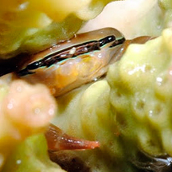
Tanah Merah, Jul 11
Photo shared by Loh Kok Sheng on his blog. |
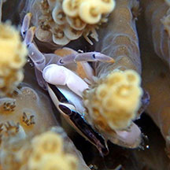
Terumbu Pempang Laut, Aug 16
Photo shared by Loh Kok Sheng on facebook. |
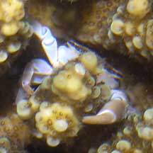
Sisters Island,
Mar 06 |
| Bandit
coral crabs on Singapore shores |
| Other sightings on Singapore shores |
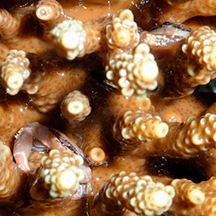
Tanah Merah, Jun 10
Photo shared by Loh Kok Sheng on his blog.
|
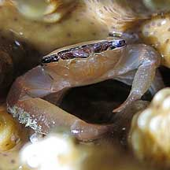
Tanah Merah,
Jun 10
Photo
shared by James Koh on his
blog.
|
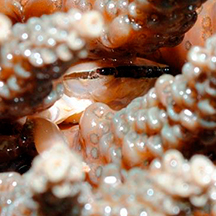
Tanah Merah, May 13
Photo shared by Loh Kok Sheng on his blog.
|
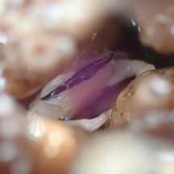
Tanah Merah Ferry Terminal, Jun 22
Photo shared by Kelvin Yong on facebook.
|
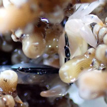
Tanah Merah Ferry Terminal, Jun 23
Photo shared by Loh Kok Sheng on facebook. |
|
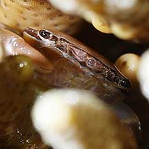
Kusu Island,
May 10
Photo
shared by James Koh on his
blog..
|
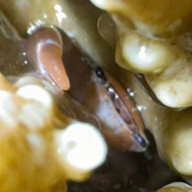
Kusu Island, Jun 24
Photo shared by Tammy Lim on facebook. |
|
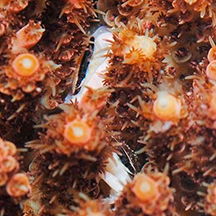
Sisters Islands, Jul 14
Photo shared by Loh Kok Sheng on his blog.
|
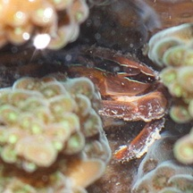
Terumbu Selegie, Jun 11
Photo shared by James Koh on his
blog. |
|
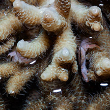
Pulau Hantu, Jul 15
Photo shared by Marcus Ng on facebook.
|
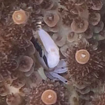
Terumbu Hantu, Aug 23
Photo shared by Tammy Lim on facebook.
|
|
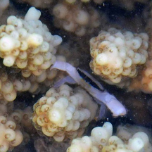
Pulau Semakau South, Jul 15
Photo shared by Neo Mei Lin on her blog.
|
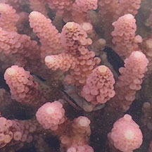
Pulau Semakau East, Jul 18
Photo shared by Jesselyn Chua on facebook.
|
|
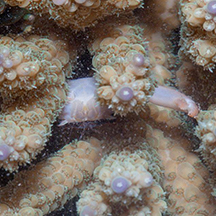
Terumbu Raya, Mar 16
Photo shared by Marcus Ng on facebook
|
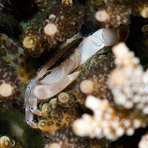
Raffles Lighthouse, Nov 16
Photo shared by Heng Pei Yan on facebook.
|
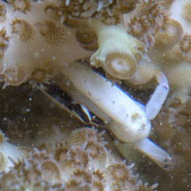
Raffles Lighthouse, Aug 16
Photo shared by Marcus Ng on facebook.
|
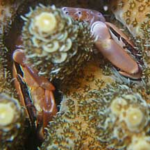
Terumbu Salu,
Jan 10 |
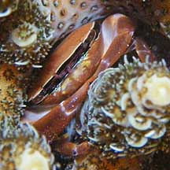
Photo
shared by Loh Kok Sheng on his
flickr. |
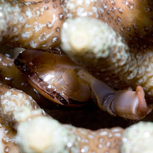
Pulau Senang, Jun 10
Photo shared by Marcus Ng on flickr. |
|
Links
References
- Ng, Peter
K. L. and Daniele Guinot and Peter J. F. Davie, 2008. Systema
Brachyurorum: Part 1. An annotated checklist of extant Brachyuran
crabs of the world. The Raffles Bulletin of Zoology. Supplement
No. 17, 31 Jan 2008. 286 pp.
- Lim, S.,
P. Ng, L. Tan, & W. Y. Chin, 1994. Rhythm of the Sea: The Life
and Times of Labrador Beach. Division of Biology, School of
Science, Nanyang Technological University & Department of Zoology,
the National University of Singapore. 160 pp.
- Wee Y.C.
and Peter K. L. Ng. 1994. A First Look at Biodiversity in Singapore.
National Council on the Environment. 163pp.
- Davison,
G.W. H. and P. K. L. Ng and Ho Hua Chew, 2008. The Singapore
Red Data Book: Threatened plants and animals of Singapore.
Nature Society (Singapore). 285 pp.
- Jones Diana
S. and Gary J. Morgan, 2002. A Field Guide to Crustaceans of
Australian Waters. Reed New Holland. 224 pp.
|
|
|